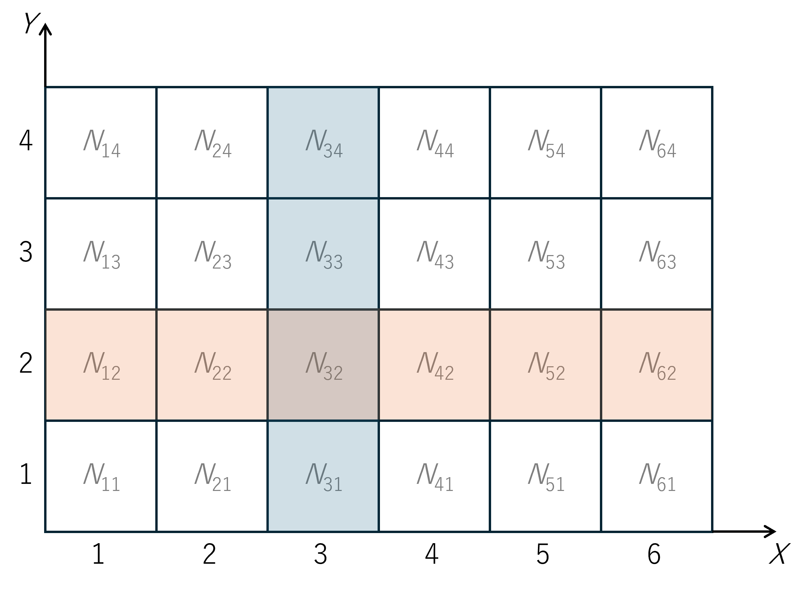

ベイズの定理
説明のために以下のような絵を考える。


上図のマス内にある \(N_{ij}\) は、「\(X=i\) かつ \(Y=j\)」という事象が起きた回数を表すものとする。青く色が付いた部分の和を取れば「\(X=3\)」という事象が起きた回数になり、オレンジ色の部分の和を取れば「\(Y=2\)」という事象が起きた回数となる。いま、全てのマスの総和を \(N\) と表すと、「\(X=i\) かつ \(Y=j\)」という事象が起こる確率は、
\[P(X=i, Y=j) = \frac{N_{ij}}{N}\]
と計算できる事になる。以上を踏まえ、つぎに条件付き確率を考える。\(X=3\) が起こったと知っているとき、\(Y=2\) が起こる条件付き確率 \(P(Y=2|X=3)\) は、上図より
(7)\[P(Y=2|X=3) = \frac{N_{32}}{N_{X=3}}\]
と計算できることがわかる。ここで \(N_{X=3}\) は、上図の青い部分の和
\[N_{X=3} = \sum_{j=1}^4 N_{3j}\]
である。(7) を少し変形していく
(8)\[P(Y=2|X=3)
= \frac{N_{32}}{N_{X=3}}
= \frac{N_{32}/N}{N_{X=3}/N}
= \frac{P(X=3, Y=2)}{P(X=3)} .\]
ここで、上図のオレンジ部分の和
\[N_{Y=2} = \sum_{i=1}^6 N_{i2}\]
を用いて (8) をさらに変形する。
\[P(Y=2|X=3)
= \frac{N_{32}/N}{N_{X=3}/N}
= \frac{(N_{32}/N_{Y=2})(N_{Y=2}/N)}{N_{X=3}/N}
= \frac{P(X=3|Y=2) P(Y=2)}{P(X=3)}\]
したがって、
\[P(Y=2|X=3)
= \frac{P(X=3|Y=2) P(Y=2)}{P(X=3)}\]
という関係が成り立つことがわかる。これがベイズの定理である。